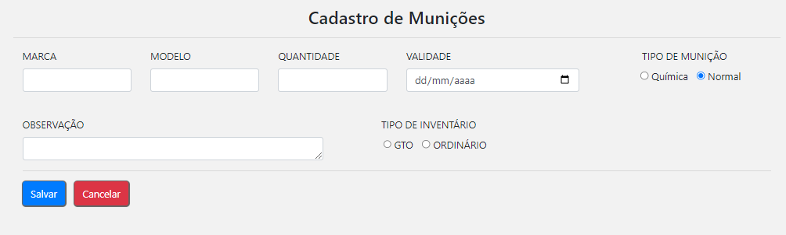

Documentação (Ajuda)
1° - Clique no botão "Cadastros" da barra lateral e selecione o que deseja cadastrar.
2° - Preencha todos os campos necessários do formulário que você estará visualizando.
3° - Por fim clique no botão "Salvar". Você receberá uma mensagem de sucesso na sua tela caso o cadastro tenha sido realizado.
1° - Clique no botão "Consultas" da barra lateral e selecione o que deseja consultar.

Você visualizará os dados em tabela. Exemplo abaixo.
2° - Você poderá buscar e filtrar resultados das tabelas através do campo "buscar".
Obs - Você se depará também com botões de ação, como abaixo.
Ao clicar no botão " OBS " obterá uma menssagem com a sua observação, caso tenha cadastrado.
Ao clicar no botão " Editar " visualizará todas as informações em campos e poderá edita-las e salva-las.
Ao clicar no botão " Ver Histórico " visualizará os dados de uma arma e seu histórico de cautela e poderá imprimir.
1° - Clique no botão "Cautela do EPI" e selecione "Gerar Documento".
2° - Preencha todos os campos necessários. Caso você tenha uma assinatura já cadastrada, deixe o campo "Assinatura" no automático, caso, não tenha, coloque manual e insira sua assinatura. Depois basta clicar no botão vermelho, escrito "Gerar Documento".
3° - Para visualizar os documentos gerados, clique no botão "Cautela do EPI", como no 1° passo, e selecione Visualizar Documentos.
Visualizará os documentos como a imagem abaixo e poderá acessa-los.

1° - Clique no botão "Descargo de Munição".
2° - Preencha todos os campos necessários do formulário e por fim clique no botão vermelho, escrito "Gerar Documento".
1° - Clique no botão "Permissões".